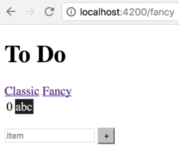

Rangle.io Angular Training
Routing
Roadmap
- How do I route different URLs to different parts of an application?
- How do I change what is displayed based on the URL?
Why Routing?
- Routing allows users to navigate to different parts of the application while maintaining application state
- Angular encourages creation of modular applications (every module define its own routes)
- Note: routing is optional
- Can build applications that never change URL
- But that makes locations within the application un-bookmarkable
Fancy Lists
- Create a
FancyListComponentthat displays the same to-do list in a different way - Allow users to switch between them by going to
/todoand/fancy
src/app/fancy-list/fancy-list.component.html
<table>
<tr *ngFor="let item of thingsToDo; let i = index" id="{{i}}">
<td>{{i}}</td>
<td class="item">{{item}}</td>
</tr>
</table>
src/app/fancy-list/fancy-list.component.css
td.item {
color: #E0E0E0;
background-color: #202020;
}
Configuring Routing
- Set
basetag in the<head>ofsrc/index.htmlto tell Angular where routes start
src/index.html
<base href="/">
- Allows applications to be hosted below the root of the domain
- E.g.,
http://rangle.io/some/pathwould setbaseto/some/path
- E.g.,
Defining Routes
- Create array of type
Routesthat specifies what to do with different paths - A plain TypeScript file (not created with Angular CLI)
src/app/app.routes.ts
import { Routes } from '@angular/router';
import { ToDoListComponent } from './to-do-list/to-do-list.component';
import { FancyListComponent } from './fancy-list/fancy-list.component';
export const routeConfig: Routes = [
{ path: '', redirectTo: '/todo', pathMatch: 'full' },
{ path: 'todo', component: ToDoListComponent },
{ path: 'fancy', component: FancyListComponent }
];
Common Attributes in Routes
| Attribute | Use |
|---|---|
path |
Browser URL for route |
component |
Component displayed for route |
redirectTo |
Where to redirect |
pathMatch |
Match full path or just the beginning? |
children |
Array of route definitions objects representing child routes |
componentandredirectToare mutually exclusivechildrenwill be discussed later
Adding Router Module
- Import
routeConfigintoapp.module.ts - Add
RouterModule.forRoot(routeConfig)toimports- Creates a configured router module
src/app/app.module.ts
import { RouterModule, Routes } from '@angular/router';
import { routeConfig } from './app.routes';
@NgModule({
// ...as before...
imports: [
// ...as before...
RouterModule.forRoot(routeConfig)
],
// ...as before...
})
export class AppModule { }
Adding RouterOutlet
- Use
<router-outlet></router-outlet>to show where to display routed content - Angular dynamically places content after the tag
src/app/app.component.html
<h1>{{title}}</h1>
<nav>
<a [routerLink]="['/todo']">Classic</a>
<a [routerLink]="['/fancy']">Fancy</a>
</nav>
<router-outlet></router-outlet>
<app-generic-input (newItem)="onNewItem($event)"></app-generic-input>
- Use
routerLinkto create links between dynamic components- Parameter is an array of values
Final Appearance
| Classic View | Fancy View |
|---|---|
 |
 |
- But going to
http://localhost:4200/todoclears all the to-do items! - …pause for thought…
- Because we’re re-loading the application, which throws away the accumulated list
- We need to persist our data
Home